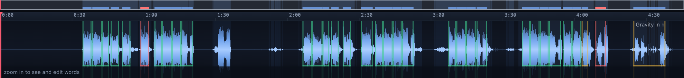
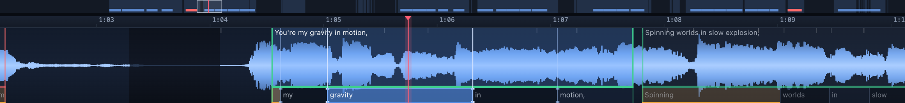

lyricsync turns an audio track plus a plain-text lyrics file into accurate
time-synchronized lyrics — .lrc, word-level .lrc, .srt,
.vtt — using only free, locally-run open-source models. Built for AI-generated
songs, where the lyrics are known exactly but the timing is not.
Everything runs on your machine. No API keys, no uploads, no per-track cost.
./setup.sh # one-time, ~5 min
./.venv/bin/python -m lyricsync song.wav lyrics.txtThat aligns the track and opens the review UI at http://127.0.0.1:8420.

The naive approach — transcribe with Whisper, fuzzy-match the text — falls apart on songs: a chorus that repeats four times has four identical transcripts, and nothing tells you which is which. Since we already know the words, this is a forced alignment problem, not a transcription problem. Alignment consumes the text in order, so repeats resolve by position for free.
But one aligner is not enough, and there is no ground-truth timing file for an AI-generated song to check against. So the pipeline runs three independent passes and cross-examines them.
Demucs splits out a vocals-only stem. Aligning against the stem rather than the full mix is the single biggest accuracy win on dense productions — the aligners stop locking onto kick drums and synth stabs. It also makes is anyone singing right now? a simple, reliable energy question, which the scorer and the UI both lean on heavily.
A Whisper forced-alignment pass over a whole song desynchronizes. A 4-bar instrumental is longer than Whisper's 30-second attention window, and once it loses the thread the rest of the track slides. Measured on the sample track, a global Whisper pass put the closing line at 2:37 of a 4:46 song — off by nearly two minutes.
wav2vec2 CTC forced alignment (torchaudio's MMS_FA) has no such failure mode: it
emits per-frame probabilities and finds one globally optimal path, so instrumental stretches are
absorbed as blanks. Long tracks compute emissions in chunks and run a single global
Viterbi alignment over the concatenation, so long-range ordering is never lost.
With the structure anchored, each section is cropped to a ~20-second window and re-aligned with Whisper, which is both accurate and precise at that length. Coarse-to-fine: CTC for structure, Whisper for edges. On the sample track this took median cross-aligner disagreement from unusable to 140 ms.
Both aligners are told the lyrics, so both can be confidently wrong in the same place, and their agreement can flag a line as uncertain but cannot say which candidate is right. So a third pass transcribes the vocal stem blind — told nothing — and its words are matched back to the lyrics with an order-preserving character-stream match.
Where that lands is the tiebreaker, and it is the strongest single signal in the merge. On the sample track it correctly resolved all three disputed lines.
There is no reference timing file, so accuracy is estimated from evidence rather than measured against truth. Every line gets a 0–100 score from six signals:
| Signal | Weight | What it catches |
|---|---|---|
| Cross-aligner agreement | 30 | Two unrelated model families disagreeing means the line is uncertain |
| Blind-transcription corroboration | 22 | Both aligners wrong together; whole sections misplaced |
| Vocal coverage | 20 | A line parked over an instrumental break |
| Onset proximity | 12 | Starts that don't land on a vocal onset |
| Word density | 8 | Spans far too long or short for the words in them |
| Aligner confidence | 8 | Low per-word probability |
lines aligned 33/33
median start disagreement 160 ms
agreement <=150/300/500ms 48% / 76% / 85%
heard independently 33/33 lines
vocal coverage mean 99%, min 80%
mean line score 94.5/100
needs review 2 line(s) [5, 31]Read the flags as "look here", not "this is wrong." On the sample track both flagged lines are in fact correctly placed — verified against the blind transcription — and are flagged only because CTC and Whisper disagree about them by seconds. That is the flags doing their job: they point at genuine ambiguity. What they buy you is the absence of false negatives.
A quality score that always says "fine" is worthless, so it was checked against a deliberately degraded run — the same track aligned against the full mix, skipping vocal isolation:
| normal | degraded (--no-separate) | |
|---|---|---|
| mean line score | 94.5 | 69.9 |
| vocal coverage | 99% | 9% |
| lines needing review | 2 of 33 | 11 of 33 |
| quality gate | passed | failed on 3 criteria |
The thresholds are calibrated against what two different model families can actually achieve, not against perfection — demanding near-total agreement makes the gate fail on good output and retry toward a target it can never reach.
The pipeline is a state machine, not a single pass, and it separates two questions:
Either one triggers another iteration, because a track can clear every aggregate threshold while still holding one badly placed line — and that line is exactly what a viewer notices. Only the sections containing weak lines are re-aligned. Each iteration re-scores and keeps the best-supported candidate per line, so a retry can never make a line worse, and the loop stops early once an iteration changes nothing.
There are two ways in, and most of the time you want the first.
Two aligners of different model families time every word: Whisper, and a wav2vec2 CTC pass re-run per line, constrained to that line's own audio and its known words so it cannot drift the way a whole-track pass can. On the sample track that takes about 15 seconds and splits 177 words three ways:
| words | what happens | |
|---|---|---|
| both models agree within 150 ms | 137 (77%) | trusted, never shown to you |
| provably impossible | 2 | repaired automatically |
| genuinely ambiguous | 40 | you decide, by ear |
Provably impossible means no reading of the audio could justify it: a word lasting zero seconds, a word starting before the word in front of it, a word starting where the vocal stem is silent. Those are repaired without asking. The repair only removes the impossible state — it does not claim to know the truth, so those words still come to you.
Everything left is presented one at a time: the line with the word marked, why it was flagged in plain language, and two buttons that each play from the moment that version says the word begins. The right one starts on the word.
An A/B is only honest when one of the two is correct, and sometimes neither is. So the card carries its own waveform strip — the word's neighbourhood, with both candidates marked on it: blue where the timing is now, green where the second model wants it, onset ticks along the bottom, and a playhead while a preview plays.
Drag it and you make a third candidate, drawn in violet. It snaps to a vocal onset within 60 ms (alt drags free) and is clamped to the range the timing model would actually accept, so the strip can never show a position that would be silently moved on the way in. Accepting an adjustment is one undo step, exactly like accepting a suggestion. That closes the last reason to leave: a song can be word-aligned end to end from inside one dialog.
| Key | Action, while the sheet is open |
|---|---|
| ← → | nudge the adjusted timing ±50 ms (shift ±10 ms) |
| space | replay whichever version you heard last |
| 1 2 3 | hear now / suggested / adjusted |
| enter | take the primary button |
A lyrics .txt is typed by hand, and hands drop things — most often a chorus repeat,
because it is the line already typed three times. The aligner cannot notice: it is told
the lyrics and consumes them in order, so the omission does not raise an error, it leaves a hole
nobody looks in. On the sample track that hole is 45.8 seconds between the first
chorus and verse 2, with a clearly sung line inside it.
The evidence to catch this was already being computed and thrown away. The blind pass reads the whole stem and each known line claims the words near it; whatever no line claims was, by construction, sung and is not in the lyrics as timed.
Finding candidates is easy. Refusing bad ones is the work — a vocal stem carries pads, "ooh"s and reverb tails, and Whisper will cheerfully hallucinate "Thank you." over a fade. So a candidate must clear four tests at once: ≥3 words, mean confidence ≥ 0.6, no overhang onto a neighbouring line, and a ≥ 0.8 text match to a line the lyrics already contain, covering ≥ 60% of it. Every gap on the sample track, scored:
| gap | vocal | heard | conf | matches a line? |
|---|---|---|---|---|
| 1:20→2:06 | 12.5s | "You're my gravity in motion" | 0.89 | 1.00 — exact, 5/5 words |
| 1:02→1:04 | 1.5s | "You're my" | 0.60 | 0.50 — 2/5, overhangs the next line |
| 4:05→4:08 | 2.2s | "Ocean" | 0.29 | 0.21 — one word |
| 4:38→end | 1.8s | "Thank you." | 0.50 | 0.30 — hallucinated over the fade |
| five others | 1.7–9.3s | nothing transcribed | — | — |
One candidate survives, and it is the right one. Note the last test: the text has to be a line you already wrote. A transcription confident enough to trust for novel words is also confident enough to be wrong in a way nobody catches by ear, and approving that means proofreading a machine instead of confirming what you just heard. So the only question put to a human is one an ear settles in five seconds.
It is asked in two places: a dashed ghost row in the lyrics exactly where the line would go, and a card at the front of Check timings — a line cannot have its words timed before it exists. On the sample track, accepting it takes the benchmark from 33/33 lines at a mean of 94.5 to 34/34 at 94.6, all 34 heard independently.

The timeline is the expert path — direct control, for when the guided pass hands you something it cannot decide.
Enhanced LRC encodes one timestamp per word, and a word's end is the next word's start. So a line of N words has exactly N−1 editable internal boundaries. Editing starts only makes gaps and overlaps unrepresentable: one handle per boundary, and the two words either side absorb every change.
# align + open the review UI (the default)
python -m lyricsync song.wav lyrics.txt
# align and export, no UI
python -m lyricsync align song.wav lyrics.txt
# repair impossible word timings, list what needs an ear
python -m lyricsync audit workdir/song
# re-run the benchmark against edited timings
python -m lyricsync score workdir/song
# rewrite lrc/srt/vtt from project.json
python -m lyricsync export workdir/song
Useful flags: --model large-v3-turbo (better refinement, slower),
--no-roundtrip (skip the blind transcription, ~90 s faster),
--no-separate (align against the full mix), --force,
--max-iterations N.
Everything lands in workdir/<track-slug>/:
| File | Purpose |
|---|---|
lyrics.lrc | Line-level synced lyrics, the standard format |
lyrics.word.lrc | Enhanced LRC with per-word timings, for karaoke highlighting |
lyrics.srt / .vtt | Subtitles — feed straight to ffmpeg -vf subtitles= |
project.json | Word-level timings, per-line scores and the scorecard |
vocals.wav | Cached vocal stem — separation is the slow step, never redone |
audit.json | Last timing check: what was auto-repaired, what needs an ear |
The point of all this is captions on a video, so that is what was checked: lyrics.srt
burned onto video with ffmpeg -vf subtitles=, then frames sampled across the track.
At 0:36, 1:00, 3:10 and 4:10 the expected line — and only the expected line — is on screen.
Chorus (8 bars, full drop) are parsed as structure and never
aligned as lyrics. [Verse 1], Chorus: and (Bridge) all work.